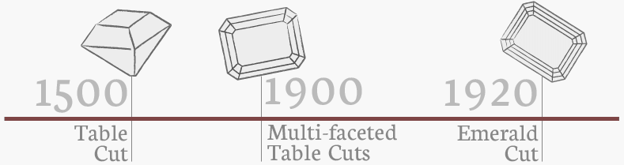
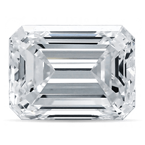

Emerald:
One of the first cuts to be used in jewellery, the emerald cut is a rectangular shape with truncated corners and a broad and flat plane that resembles stair steps when viewed from above. This style is referred to as a ‘step cut’. The emerald is usually comprised of 57 facets (with 25 on the crown and 32 on the pavilion), although the number of rows of facets on both the crown and pavilion can vary, altering the total number of facets for this cut. While it typically has less fire and brilliance than brilliant cuts, the broad flat plane of this shape highlights the clarity of a diamond and its natural crystalline rectangular growth. Additionally, the flat planes of the edges allow for a variety of side gemstones such as the long thin rectangular diamonds that often flank this cut, known as baguettes. The vast majority of emerald cuts have length to width ratios between 1.30 and 1.50 with 1.40 considered as the "ideal" or most popular. Those who prefer a more squared shape will opt for lower ratios while those after a more rectangular cut will choose higher ratios. Emerald ratios outside this range are atypical and generally less desirable.
The exact origins of the first emerald cut remain somewhat ambiguous, although its stylistic specifications can be traced back to the single table cuts of some 500 years ago and the multi-faceted table cuts of the Art Deco period in the early 20th century. The term “emerald cut"" only began being used during the Art Deco period, despite the fact that diamond cutters were already cutting the same shape under different names. Initially, the cut itself was developed specifically for emerald gems in order to reduce the amount of pressure exerted during cutting and to protect the gemstone from chipping. However, diamond cutters soon realized the importance of this cut and applied it to diamonds as well.
